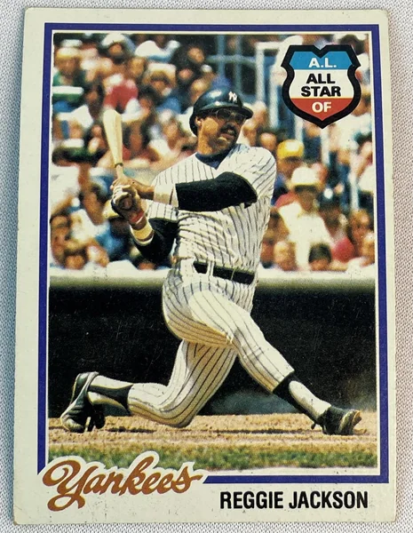

Reggie Jackson "Mr. October"
Career Highlights & Facts
(Facts are AI-generated and may require verification)
- Earned a reputation for delivering legendary performances during the final month of the season.
- Selected as the Most Valuable Player in a unanimous vote.
- Appeared in a famous film as a comically crazed assassin targeting royalty.
Would you like to find out more about Reggie Jackson?
From Spring Training to Screen Test
Ted Leavengood
Reginald Martinez Jackson was born on May 18, 1946, in Wyncote, Pennsylvania, a largely white suburb north of Philadelphia’s central city. His father, Martinez Jackson, ran a dry-cleaning and tailoring business. As a grown man, Reggie claimed he still knew how to cuff a pair of slacks.
His father was a veteran of World War II who flew a P-51 Mustang fighter during the North Africa campaign and used his Army Air Corps savings to start his business in a modest two-story structure, home to both family and business.
Reggie’s father was a significant presence in his early life who provided a working-class environment amid somewhat more affluent surroundings. His mother, Clara, left with three of the children when he was 6 years old. His father raised Reggie, older brother James, and an older half-brother, Joe. Martinez continued to provide important stability until Reggie’s senior year in high school.
Jackson was often one of the few black students attending his school. His background differed greatly from that of other black major leaguers of his generation who came of age in segregated communities and learned early the importance of a low profile. His comfortable demeanor among whites of relative affluence was at times a source of problems with other players, the press, and ownership.
Jackson starred in high-school sports including football, basketball, baseball, and track, and his games attracted many scouts. His father wanted his son to get a college education and urged him to eschew a professional contract. When Reggie graduated from high school and made his way to Arizona State University on a football scholarship, the most important figure in his life was not present. Martinez Jackson had been arrested and jailed near the end of Reggie’s senior year in high school for making moonshine in his basement.
Later, when he played for the Baltimore Orioles, Jackson reconnected with his mother and sisters Tina, Beverly, and Delores, who lived in Baltimore. He maintained a relatively close relationship with both sides of his family during his adult years.
With his father imprisoned, Jackson found important new mentors at Arizona State. The football coach was Frank Kush, who later was inducted into the College Football Hall of Fame. Jackson said Kush taught him toughness in relentless, physically demanding drills for the football team. An excellent football player, he could run the 60-yard dash in sprinter speed, 6.3 seconds.
By the beginning of his sophomore year he was a starting defensive back and the defensive captain in a Top 20 program.
Jackson found baseball more by accident than by intent. He had asked permission to play baseball as part of his scholarship agreement, but had to maintain a B average to do so. In the spring of his freshman year, he arranged a tryout. He displayed the tape-measure power he had even as a young man and was asked to join the freshman team. His skills were still rough and coach
Bobby Winkles
suggested that he play baseball in the summer with a Baltimore amateur team to sharpen them. It was an all-white team run by a Baltimore Orioles scout, Walter Youse.
Neither Youse nor anyone else on the team understood Reggie to be black until he showed up for the tryout. Youse watched the tryout and told Reggie years later, “The more I saw you that day, the whiter you got.”
After a summer playing competitive baseball almost every day, Jackson returned for his sophomore year at Arizona State and claimed the starting job in center field.
The position had been manned the prior year by
Rick Monday
, who Jackson said “was a big league ballplayer when he was 19.”
Monday was the best college player in the country when he left Arizona State and signed a $100,000 bonus contract with the Kansas City Athletics at the end of Jackson’s freshman year. Reggie opined that replacing Monday in center field was like “replacing the sun and moon.”
Jackson had a remarkable sophomore baseball season and was drafted by the A’s, the second player chosen in the June 1966 draft. What followed was the first of many protracted negotiations between Jackson and Athletics owner
Charles O. Finley
. Jackson and his father (now out of jail), traveled to Finley’s Indiana farm, where they agreed to a contract with an $85,000 bonus.
Jackson began at Lewiston (Idaho) of the low Class A Northwest League, but was quickly moved to Modesto of the high-A California League, where he met many of players with whom he would share some of the greatest moments of his early years in the majors.
Rollie Fingers
Joe Rudi
, and
Dave Duncan
played for Modesto and were a cut above the rest even then. When the team traveled to Bakersfield for a series, the local paper’s headlines read, “Call Out the National Guard, the Modesto Reds Are in Town.”
The next season the foursome continued as the backbone of Birmingham in the Southern League. It was Jackson’s introduction to the unique cultural institutions of the South as they existed in 1967. Segregation was enforced unofficially in many aspects of life in Alabama and Jackson said that he felt the “uncomfortableness, the awkwardness, the fear … in the heart of Dixie.”
He played well enough for the Birmingham A’s to earn a midseason promotion to Kansas City.
In his first exposure to the majors, Jackson hit only .178 and was sent back down. The demotion was difficult for him emotionally, but Birmingham manager
John McNamara
provided important support. McNamara managed Jackson again in Oakland and Anaheim, and Jackson said his help was essential for a 21-year-old trying to grow up and handle both success and failure in a Deep South environment.
Jackson started the 1968 season with Oakland, where Finley had relocated the Athletics. He shrugged off the tentative emotions from his prior “cup of coffee” and started the season strong. At the end of April he was hitting .309 with four home runs. He cooled off and saw his average drop to .231 in early June. In May he hit only one “dinger,” as he liked to call his home runs.
Then in June Jackson found his power stroke again. He ended the season with 29 home runs and batted .250. His ability to hit the long ball established him as a permanent feature in a lineup anchored by
Sal Bando
, also from Arizona State, Joe Rudi, and
Bert Campaneris
, the dynamic basestealer who hit at the top of the lineup. Rick Monday was in center field, but it was Bando, Jackson, Campaneris, and Rudi who became the backbone of the Oakland Athletics teams that dominated the American League in the 1970s.
The ’68 Athletics finished sixth, winning 82 games. They were on a slow ascent and the next year Jackson was at the center of it all. He became a national celebrity during the 1969 season as he put up home run numbers that compared to those of
Roger Maris
and
Babe Ruth
. By July 5 he had 34 home runs;
Frank Howard
and
Harmon Killebrew
had 30 and 22 respectively.
“Microphones were shoved in my face for the first time. … Fans grabbed and screeched for autographs,” Reggie said, acknowledging that he was not ready for the pressure his success had created.
He was only 23 years old and described himself as “tired and beat up” by the end of the season. Managing only a single home run in September, he ended the season with 47 home runs, third behind Killebrew with 49 and Howard (48). Jackson led the league in slugging, at .608, and the 47 home runs were his career best.
The next season was one of the worst in Jackson’s early life. He hit .237 with only 23 home runs. He and his wife, Jennie, whom he had met at Arizona State and married in 1968, divorced. Very little went right during the year and Reggie decided to play winter ball in Puerto Rico in hopes of finding his swing. At Santurce he played for future Hall of Famer and inveterate tough guy
Frank Robinson
, who was a positive influence and helped Jackson put his life back on track.
In 1971 the Athletics began to establish their dominance in the American League. They won 101 games and won the West Division. Sal Bando most often was the dominant force in the clubhouse and just as important in the lineup. Jackson said of him, “When Sal talked, people listened.”
The atmosphere in the clubhouse was pugnacious at times and it took a strong personality to keep order. According to Reggie that decorum led to execution on the field. “Just do it,” was Bando’s motto. No whining, no excuses, just get the job done.
With Bando, Jackson, and
Mike Epstein
at its heart, the A’s offense was potent, but the pitching was even better. The 1971 season saw the emergence of
Vida Blue
(24-8, 1.82 ERA), who won both the Most Valuable Player Award and the
Cy Young
Award.
Catfish Hunter
won 21 games and had an ERA of 2.96.
The Athletics were swept in the 1971 American League Championship Series to the Baltimore Orioles. From that near-miss, the Athletics and Jackson began a historic run, winning three straight World Series, 1972-1974. No franchise other than the New York Yankees has achieved a similar level of dominance. For a team that defined the term “small-market franchise,” it was a remarkable feat.
In 1972 Jackson set a goal of winning the MVP, but failed, hitting only .265 with 25 home runs. First baseman Epstein led the team with 26 home runs and Joe Rudi (.305) was the only Athletic to hit over .300. The A’s won the pennant because they featured the best combination of hitting and pitching, finishing second-best in the American League in both runs scored and fewest runs allowed.
In the ALCS the A’s beat the Tigers in the playoffs in a tight five-game series where pitching dominated. Jackson was not a deciding factor in any of the games, but played well. In the fifth and final game, Oakland manager
Dick Williams
called for a double steal with Jackson on third base, Epstein on first, and one out. On the pitch
Gene Tenace
swung and missed for the second out, and
Bill Freehan
fired for second base. As soon as the ball went past the pitcher, Jackson bolted from third. Epstein beat the throw and second baseman
Tony Taylor
threw back to home. Jackson felt his hamstring give 20 feet from home.
Despite doing serious damage in the process, Jackson continued down the baseline and executed a perfect slide around Freehan to score the tying run in a game the A’s eventually won, 2-1. His determination gave Oakland its first American League championship, but he had to be carried from the field with a torn hamstring.
His foot in a cast, Jackson missed the World Series between Oakland and Cincinnati’s Big Red Machine. With Reggie watching on crutches from the dugout, the A’s defeated the Reds in seven games. The Series MVP was Gene Tenace who had four home runs and hit .348. Though Jackson missed the World Series, he was still in the spotlight and he wanted more. In 1973 he would grab it in earnest.
Early in 1972 Jackson said in an interview, “I want to make me $100,000.” He believed he could become an MVP-caliber player and told the interviewer, “I want to be hitting .300 and some change, hitting 35-40 homers, and driving in 100-110 runs.”
He did not have that kind of year in ’72, but it was coming.
In 1973 Mike Epstein was gone and Gene Tenace took over at first base with
Ray Fosse
catching most games. Tenace had a fine season, hitting 24 home runs with a .259 average. Bando had one of his best years with 29 homers and a .287 average. But this was the first season that Reggie Jackson’s name was written into the heart of the lineup without fail every day. Manager Williams also moved him from center field to right, where he would face fewer defensive pressures.
With their strong pitching and
Brooks Robinson
at third, the Orioles had the best regular-season record in 1973. But in the ALCS Oakland had too much firepower and pitching. Catfish Hunter threw a shutout in the fifth game to win the pennant for the Athletics. Jackson batted only .143 against the Orioles. His fame as the postseason player who became known as Mr. October was still to come.
In the 1973 World Series, Oakland drew the New York Mets, who had surprised Cincinnati for the NL crown. Oakland got the best of it and won in seven games, giving the A’s back-to-back titles. Jackson hit his first World Series home run in Game Seven. He hit .310 for the Series, drove in six runs, and was named Series MVP.
It was the first of many honors Jackson won for his 1973 season. He led the league with 32 home runs and 117 RBIs. He batted .293 and stole 22 bases. The collective numbers gave him the MVP season he had sought the year before. He was a unanimous selection, joining an elite group of five other players who had been elected unanimously:
Hank Greenberg
Al Rosen
Mickey Mantle
, Frank Robinson, and
Denny McLain
. In January,
The Sporting Ne
ws
made Jackson its Player of the Year.
Joining such select company was precursor to an almost certain contract war with Charlie Finley. Jackson credited Finley with putting the team together and keeping the squad playing at a high level. But Finley was a one-man operation, filling the jobs of general manager and others to cut his administrative budget to the bone. Jackson said that Finley was a sharp businessman who taught him many things about the world of business, but said above all else, “he was cheap.”
Finley issued each player two Oakland A’s hats and 24 bats to last the season. During the postseason, when other teams provided a separate plane for press and families, Finley paid for one plane and anyone who could fit. When the trainer taped his ankles, Jackson said, he used tape sparingly and saved whatever was left of each roll, never throwing anything away because there might not be a replacement.
The tight-fisted Finley made contract negotiations high drama. After his MVP season in 1971, Vida Blue held out in April 1972, saying he would retire before taking the $50,000 contract Finley offered. For Jackson the negotiations were just as contentious. Finley drew the line at $100,000, saying he could not pay Jackson more than he paid Catfish Hunter. Jackson was sensitive to the needs of others on the team, saying, “I suppose I could shoot for $175,000 or $200,000, but that would lower the take for the other guys.”
He maintained that he would not play for less than $125,000. The impasse was resolved in baseball’s newest institution, salary arbitration, where the arbitrator bridged the difference at $135,000.
Jackson described the 1974 Athletics as a team that could “win at will.”
The comment papered over clubhouse angst that began to surface around him that season. A serious physical confrontation with center fielder
Bill North
stung Jackson because of North’s allegations that Jackson spent too much time with whites, especially white women. Jackson’s mood soured over the course of the season and during a game he angrily threw a bat into the stands, where it narrowly avoided injuring manager
Alvin Dark
’s wife and two young boys.
Despite the tensions, the deeply talented Athletics team won the Western Division handily and faced the Orioles again for the pennant. As in the previous year, the talented pitching of
Jim Palmer
Mike Cuellar
, and
Dave McNally
provided problems, but Oakland won in four games. The A’s won the World Series against the Los Angeles Dodgers in five games. Jack had a good Series with the bat, though nothing to rival the previous year. This time it was a great defensive play that defined his contributions to Oakland’s third consecutive World Series win.
In Game Five, with the A’s leading 3-2 in the eighth inning,
Bill Buckner
hit a single that North misplayed in center field. Buckner took second and was headed to third with the tying run. Jackson had backed up North and, corralling the ball, he threw a bullet to cutoff man
Dick Green
who fired to third baseman Bando. Bando applied a sweep tag and Buckner was out, erasing the Dodgers’ last threat.
During the offseason, Finley’s dynasty began to crumble. Catfish Hunter was awarded free agency by arbitrator Peter Seitz because Finley had failed to make a payment to an annuity as required under Hunter’s contract. Hunter signed with the Yankees for $2.85 million over five years. Finley then traded reliever
Darold Knowles
to the Chicago Cubs for
Billy Williams
, and
Blue Moon Odom
to Cleveland. Oakland’s diminished potency was underscored when Hunter faced his former teammates for the first time and shut them out, 3-0. Jackson went 0-for-3 and began to question whether he too should be looking for greener pastures and bigger paydays.
As if to make a case, Jackson began an assault on American League pitching that carried him to another home-run title and the Athletics to another West Division title. He was aided by a newcomer,
Claudell Washington
, Finley’s rookie sensation, whose natural position was the same as Jackson’s: right field. Neither Washington nor Jackson could get the A’s past the Boston Red Sox in the ALCS. Jackson and Sal Bando tore up the Red Sox pitching staff, but Oakland missed Catfish Hunter and was swept by Boston in three games. There was no World Series in Oakland for the first time in three years and there would be more bad news in the months to come.
In December 1975 arbitrator Peter Seitz expanded his prior year’s finding for Catfish Hunter by declaring
Andy Messersmith
and Dave McNally free agents, thus nullifying the reserve clause. Finley, who had been shopping Jackson in 1975, began a more serious attempt to trade Jackson and other players who would be hitting the free market at season’s end.
Seven days before Opening Day of 1976, Finley traded Jackson and pitcher
Ken Holtzman
to the Orioles. Despite wanting to test the free agent market and often asking Finley to trade him, Jackson was devastated by the news. He had made his life in Oakland and considered it home. Despite fights with teammates and Finley’s tight-fisted oversight, he said of his time there, “The eight years I spent in Oakland were the best baseball years of my life.”
Jackson took his frustrations out on the Orioles, laboring to reach a suitable deal with GM
Hank Peters
and owner
Edward Bennett Williams
over the first few weeks of the season. His holdout impressed neither the Baltimore fans nor the players and when he finally signed at the end of April, he was out of shape. He started the season slowly and on June 13 his batting average was .208 with a paltry four home runs. He started to hit for power late in the month and wound up with 27 homers. The Orioles were never able to close the gap on the Yankees, finishing second in the AL East, 10½ games back. Jackson put a positive spin on his time playing for
Earl Weaver
and the Orioles in 1976. “Weaver is a great manager,” he said. “He made you get more out of yourself.”
Still, Jackson resolved to taste free agency and the riches it promised. After the season he listened to offers from the Orioles and the Montreal Expos, but signed with the Yankees — not only were they the best team with the most money, but they were the Yankees, home to baseball’s Pinstripe tradition. Owner
George Steinbrenner
paid him $2.96 million to play five years for New York. It was more than Catfish Hunter got, and more than any of the veteran Yankee players were making at the time.
Players like
Graig Nettles
and
Thurman Munson
had carried New York to the World Series in 1976 and like manager
Billy Martin
they believed they could do it again without Jackson. Many in the Yankee organization had argued against signing him, saying that the team had Nettles and
Chris Chambliss
and didn’t need another left-handed bat. But the idea of bringing Jackson’s huge personality to the Big Apple appealed to owner Steinbrenner. Tension with his teammates began almost immediately. Jackson described the Oakland clubhouse as being “like a college frat house,” yet was never part of the club with the ’77 Yankees.
Billy Martin was particularly problematic. The volatile Martin had once knocked out one of his pitchers at Minnesota,
Dave Boswell
. A similar confrontation was narrowly averted between Jackson and Martin in 1977.
On June 18 the Yankees were in Boston playing the Red Sox at
Fenway Park
in a nationally televised game. Late in the game Jackson misjudged a pop fly off the bat of
Jim Rice
that fell for a hit. Martin believed Jackson was loafing and the simmering feud that had started with Jackson’s signing reached a critical mass.
Martin was angry enough to pull Jackson from the game in mid-inning. When his right fielder entered the dugout, Martin confronted him with pugnacious obscenities. Jackson responded that he wasn’t loafing, but escalated the rhetoric when he told Martin, “You never wanted me on this team,” and followed it up by calling Martin an “old man.”
The two came dangerously close to blows and a fistfight was avoided only when Yankee coaches
Yogi Berra
and
Elston Howard
strained to keep the two men apart. Much of the scrum was captured on national television, and media attention boiled over in the following days. Despite numerous rumors that Martin would be fired because of the fracas, Steinbrenner and Yankees general manager
Gabe Paul
and brought the two men together to make peace.
According to Jackson, New York City hosted an ongoing media circus that was a major factor in the difficulty he experienced over his five-year tenure with the Yankees. Jackson said off-handed and off-the-record comments that would not have been printed in other cities regularly became public in New York.
Despite the lack of comity among the star players on the team, the Yankees won the AL East in 1977. Jackson’s season was typical: 32 home runs, 110 RBIs, and third in the league in slugging. But Steinbrenner had brought him aboard to win the World Series, to revisit the glories that Yankees teams had not experienced since 1962.
Jackson went 1-for-14 in the first four games of the Championship Series against the Kansas City Royals and Billy Martin benched him for the final game. Insulted and incensed, Jackson still drove in a key run with a pinch-hit single late in the game. New York beat the Royals to earn a match against the Dodgers in the World Series.
Jackson started the Series slowly, going 1-for-6. But in Games Four and Five he hit home runs, helping give the Yankees a three-games-to-two lead as the Series moved to New York. With the Dodgers ahead 3-2 in the fourth inning of Game Six, Jackson faced
Burt Hooton
, who had handcuffed the Yankees in Game Two. With Thurman Munson on base, he hit a fly ball that just made the right-field stands to give the Yankees the lead. He hit two more homers, in the fifth and eighth innings, drove in five of the victorious Yankees’ eight runs — and listened gleefully to deafening chants from the crowd of “Reggie, Reggie” as New York City found itself a new hero.
The press made much of Jackson’s World Series, comparing him with Babe Ruth, even calling him the “black Babe Ruth.”
Jackson made good on Steinbrenner’s investment, winning the Series MVP award for the second time in his career.
The nickname “Mr. October” stuck to him
.
In 1978 the Yankees defeated the Dodgers in the World Series again with Jackson and Graig Nettles leading the way for the powerful New York lineup. The following season was very different. Team captain Munson died in a crash of his airplane on August 2. The loss devastated the team and Jackson as well. Jackson had smoothed over the tempests of 1977 with Munson and had flown with Munson just days before the crash.
The Yankees never regained their form without Munson, finishing fourth in 1979. Billy Martin was fired after the season. Martin’s fall from grace buoyed Jackson, who had his best season in 1980, batting .300 for the first time and hitting 41 home runs. It was good enough to help the team to a first-place finish in the AL East, but the Yankees were swept by the Royals in the ALCS.
In the strike-shortened 1981 season, Jackson played less of a role, but he and the Yankees made it to the World Series one last time. He continued to earn his reputation as a clutch player in October, but he did not lead his team to the championship; the Dodgers beat the Yankees in six games. Jackson missed the first three games with a calf injury.
With that Series loss, Jackson’s five years as a player with the Yankees were over. Looking back, he told a biographer that signing with New York and playing in the city had been a huge mistake. Asked if he would do it again, he said, “I would not have signed with them in a million years. Not a chance.”
Aching to get out of New York and return to his home in California, he signed a five-year deal with the California Angels starting in 1982. Playing that year for
Gene Mauch
, he had a fine season, hitting 39 home runs and driving in 101 runs. The veteran Angels lineup won the American League West title but did not advance in the postseason.
In his second year with the Angels, 1983, Jackson was pleased to be reunited with former manager John McNamara, but had the worst year in his career. He was 37 years old and hit only .194 for the season with 14 homers. He was more productive the remaining three years of his Angels contract, but the team failed to make the postseason.
His time with the Angels done, Jackson chose to close out his career in Oakland. He was 41 for his final season and numerous teams marked his last appearance with special Reggie Jackson days. It was one final time for fans to chant, “Reggie, Reggie,” and a victory lap for one of the most talented and colorful players of his era. After 21 seasons in the majors, Jackson hung up his spikes at the end of the 1987 season with 563 home runs, good enough at the time for sixth on the career list.
Jackson prided himself in his investments and his business acumen. He had wealth from endorsements, real estate, and other investments. But he was not ready to dedicate himself to life in business. He wanted to try his luck as a manager, but was unwilling to work his way up the ladder from the minors. He served in Oakland as a broadcaster and hitting coach, but it wasn’t enough. He wanted to call the shots, to own a team, but that remained beyond his reach.
On January 5, 1993, Jackson was voted into the Baseball Hall of Fame on the first ballot. His plaque in Cooperstown has him in the uniform of his first team, the Athletics. His father, Martinez, who had been so important to the young Reggie, lived long enough to see his son inducted, but died the next spring. (Part of Jackson’s dream of owning a baseball team had been making his father a scout for the team.)
Having his own family and closing the gap with his mother, father, and siblings were the most elusive thing Jackson ever set his sights upon. He remained unmarried, but a woman friend gave birth to his child, a daughter named Kimberly. She became an important and enduring presence in his life, his most meaningful ownership stake to date.
Jackson has additionally acted on a number of TV series (
The Love Boat, Diff’rent Strokes, MacGyver
) and in films (
Ri¢hie Ri¢h
BASEketball
Summer of Sam
, and, most famously,
The Naked Gun: From the Files of Police Squad!
, playing a comically crazed assassin intent on killing the Queen of England). In 2007, actor Daniel Sunjata played him in
The Bronx Is Burning
, an ESPN mini-series charting the 1977 Bronx Bombers. And finally, in addition to his Hall of Fame induction, the Yankees retired Jackson’s uniform (also in 1993); the Athletics did the same 11 years later. For many years, Mr. October also has been a special advisor to the Yankees.
An earlier version of this biography appeared in “
Mustaches and Mayhem: Charlie O’s Three Time Champions: The Oakland Athletics: 1972-74″
(SABR, 2015), edited by Chip Greene. It also appeared in
“From Spring Training to Screen Test: Baseball Players Turned Actors
“
(SABR, 2018), edited by Rob Edelman and Bill Nowlin.
Jackson, Reggie, and Kevin Baker,
Reggie Jackson, Becoming Mr. October,
(New York: Random House, 2013).
Jackson, Reggie, and Mike Lupica,
Reggie: The Autobiography
(New York: Villard, 1984).
Perry, Dayn,
Reggie Jackson
(New York: Harper Collins, 2010).
Bergman, Ron, “A Bunt or a Home Run, A’s Jackson Can Deliver,”
The Sporting News
, May 6, 1972, 9.
Bergman, Ron, “Reggie Jackson Named Player of the Year,”
The Sporting News
, January 12, 1974, 29.
Pepe, Phil, “Peace Pipe or Exit Sign for Yanks’ Martin,”
The Sporting News,
July 2, 1977, 19.
Spander, Art, “Reggie Is a Man for His Times,”
The Sporting News
, November 5, 1977, 14.
Reggie Jackson and Mike Lupica,
Reggie, the Autobiography
, 16.
Jackson and Lupica, 44.
Jackson and Lupica, 45; Dayn Perry,
Reggie Jackson
, 21.
Jackson and Lupica, 41.
Jackson and Lupica, 47.
Jackson and Lupica, 54.
Jackson and Lupica, 58.
Jackson and Lupica, 73.
Jackson and Lupica, 82.
Jackson and Lupica, 82.
Jackson and Lupica, 89; Perry.
Ron Bergman, “A Bunt or a Home Run, A’s Jackson Can Deliver,”
The Sporting News
, May 6, 1972, 9.
Ron Bergman, “Reggie Jackson Named Player of the Year,”
The Sporting News
, January 12, 1974, 29.
Jackson and Lupica, 72.
Jackson and Lupica, 71; Perry, 103.
Jackson and Lupica, 71.
Jackson and Lupica, 100.
Perry, 125.
Jackson and Lupica, 86.
Jackson and Lupica, 123.
Jackson and Lupica, 148.
Jackson and Lupica, 169-173; Perry, 190-191; Phil Pepe, “Peace Pipe or Exit Sign for Yanks’ Martin,”
The Sporting News,
July 2, 1977, 19.
Art Spander, “Reggie Is a Man for His Times,”
The Sporting News
, November 5, 1977, 14.
Jackson and Lupica, 151.
Full Name
Reginald Martinez Jackson
Born
May 18, 1946 at Abington, PA (USA)
Stats
Baseball Reference
Retrosheet
500 Home Runs
Home Run Champions
Hall of Fame
Most Valuable Player
1972-74 Oakland Athletics
From Spring Training to Screen Test
Career Totals
| WAR | AB | H | HR | BA | R | RBI | SB | OBP | SLG | OPS | OPS+ |
|---|---|---|---|---|---|---|---|---|---|---|---|
| 74.1 | 9864 | 2584 | 563 | .262 | 1551 | 1702 | 228 | .356 | .490 | .846 | 139 |
Statistics via Baseball-Reference.com
The Original Clue